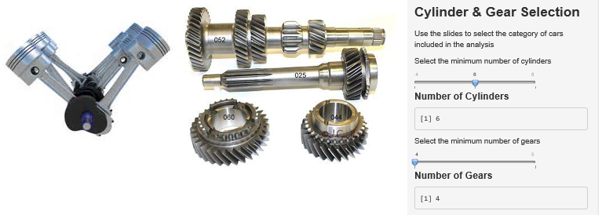
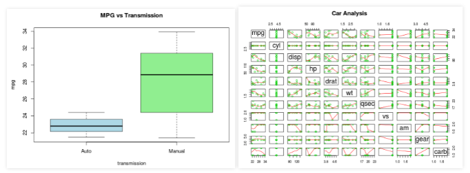

Shiny Car Application
author: John Hoegger
date: 1/24/2015
Using Shiny Apps and the Motor Trend dataset
author: John Hoegger
date: 1/24/2015
Using Shiny Apps and the Motor Trend dataset
The shiny application was developed for analysis of the
Motor Trends Car data set fromn 1973-74
head(mtcars, 1)
## mpg cyl disp hp drat wt qsec vs am gear carb
## Mazda RX4 21 6 160 110 3.9 2.62 16.46 0 1 4 4
The dataset contains data for 32 different cars
The app is published to the shinyapps site:
https://jhoegger.shinyapps.io/ShinyCar/
It allows the user to select the following options

The application compares auto and manual transmissions using a t-test to assess the impact on Mile per Gallon
The application also provides a to allow the user to see the impact of changing the sliders for number of cylinders and gears
